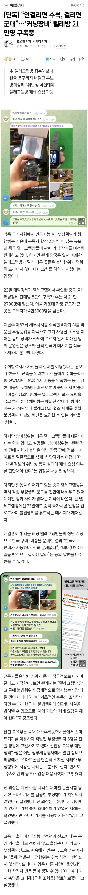

https://naver.me/551SRqjv [단독] “안걸리면 수석, 걸리면 군대”…‘커닝장비’ 텔레방 21만명 구독중中 텔레그램방 접촉해보니 한글 문구까지 내걸고 홍보 방미심위 “위법성 확인돼야 텔레그램방 폐쇄 요청 가능” 각종 국가시험에서 인공지능(AI) 부정행위가 횡행하는 가운데 구독자 합산 21만명이 넘는 규모의 중국 텔래그naver.me - dc official App출처: 더불어민주당 비대위 갤러리 [원본 보기]

댓글
수집 당시 댓글 13개
ㅇㅇ · 11.24 22:11:38
楚覇王 項羽 · 11.24 22:11:46
· 샨테 · 11.24 22:12:09
ㅇㅇ · 11.24 22:12:04
ㅇㅇ · 11.24 22:12:55
· ㅇㅇ · 11.24 22:14:34
ㅇㅇ · 11.24 22:13:54
ㅇㅇ · 11.24 22:14:31
성공하면이재명 실패하면 이진우
ㅇㅇ · 11.24 22:14:33
ㅇㅇ · 11.24 22:14:42
ㅇㅇ · 11.24 22:14:50
b.링크/KQuest · 11.24 22:15:27
ㅇㅇ · 11.24 22:15:41